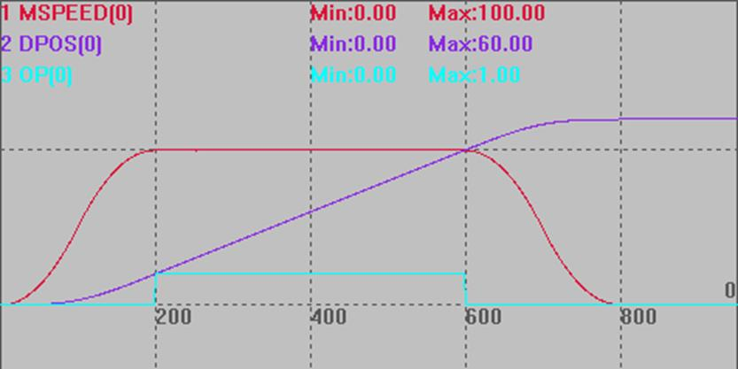

|
类型 |
轴参数 |
|
描述 |
MOVE_OP提前一定距离输出设置, 缺省0不生效，设置正数会比缺省输出位置提前指定矢量距离，设置负数则延后指定矢量距离。 MOVEOP_ADIST指令不需要打开精准输出就能生效。 只能对MOVE_OP单个OP操作有效，对每个轴来说，操作的动作是顺序的，第一个改变位置的MOVE_OP操作没有完成，后面的不会操作 MOVEOP_ADIST带入缓冲后会自动清零，避免影响其它MOVE_OP。 对支持HW功能的控制器，可以由AXIS_ZSET来启动HW精准输出，同MOVE_OP精准，此指令只支持MOVE插补类与MOVESCAN运动，凸轮、MOVE_PT等不支持，支持MOVE指令跨小线段提前输出。 |
|
语法 |
MOVEOP_ADIST=distance distance：提前/延后关胶距离 |
|
适用控制器 |
4系列控制器，fast固件190201以后固件支持 |
|
例子 |
BASE(0) ATYPE=1 UNITS=100 DPOS=0 MPOS=0 SPEED=100 ACCEL=1000 DECEL=1000 MERGE=1 SRAMP=100
TRIGGER MOVEOP_ADIST = -10 '延后10个单位距离开胶 MOVE_OP(0,1) MOVE(5) MOVE(50) '实际的开胶,关胶在这个运动 MOVE(5) MOVEOP_ADIST = 10 '提前10个单位距离关胶 MOVE_OP(0,0) END
运动曲线 MSPEED(0)垂直刻度100 DPOS(0)垂直刻度50 OP(0)垂直刻度5  |
|
相关指令 |